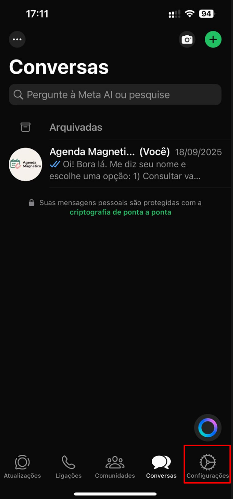
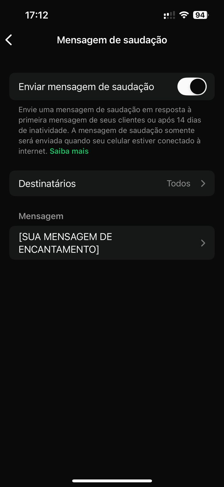

Guia Definitivo para Clínicas de Estética
Do Atendimento Humanizado à Gestão de Alta Performance: O método C.A.R.E. e estratégias avançadas para encantar clientes, automatizar processos e maximizar resultados em 2025 e além.
Introdução: A Nova Era do Atendimento em Estética
Oiie, tudo bem? Espero que sim ☺️
Se você está lendo este guia, provavelmente é dona, gestora ou profissional de uma clínica de estética. Isso significa que você já entende algo muito importante: em um mercado cada vez mais competitivo, a qualidade técnica dos procedimentos é fundamental, mas não é mais o único fator de decisão para a cliente. A verdadeira diferenciação, o que transforma uma cliente satisfeita em uma fã leal, reside na experiência.
Sabemos como é difícil lidar com a avalanche diária: mensagens constantes no WhatsApp, ligações, dúvidas sobre preços, agendamentos, confirmações... Muitas vezes, você se pega pensando: “Como vou atender todas as clientes na mesma hora?” ou “E se eu não responder agora, vou perder uma cliente?”. Essa ansiedade é real e pode te transformar em prisioneira do seu próprio negócio.
Mas calma, você não precisa se sobrecarregar para encantar suas clientes. Um atendimento que acolhe, guia e encanta é o que constrói relacionamentos duradouros e enche a sua agenda, sem que você precise estar online 24 horas por dia.
Este guia foi criado a partir da análise do e-book "Dicas para encantar clientes em clínicas de estética" e enriquecido com uma extensa pesquisa de mercado, trazendo as melhores práticas, scripts e estratégias para 2025. O objetivo é fornecer um manual completo para você não apenas resolver as frustrações do dia a dia, mas também para elevar sua clínica a um novo patamar de profissionalismo e sucesso.
IMPORTANTE: Este é um guia denso, direto e cheio de estratégias práticas. Para aproveitar realmente o conteúdo, o ideal é ler com intenção: escolher uma ideia, aplicar no mesmo dia e observar os resultados. Ler sem colocar em prática não gera transformação. A ação é o que vai fazer sua clínica evoluir de verdade.
Aqui, você aprenderá a implementar o método C.A.R.E., a humanizar a automação, a vender com mais eficiência e a gerenciar seu negócio com base em dados, tudo isso sem perder o toque humano que é a alma do seu trabalho.
Vamos começar essa jornada de transformação?
Parte 1: A Base do Sucesso - Atendimento Humanizado
A fundação de uma clínica de estética próspera não está nos equipamentos de última geração, mas na forma como cada cliente é tratado. O atendimento humanizado é a estratégia central que sustenta todas as outras.
Capítulo 1: O Atendimento Humanizado Deve Ser o Coração da Sua Clínica
Você já percebeu que suas clientes não ficam apenas pelo resultado estético? Elas ficam pela experiência que recebem. Um atendimento frio, desorganizado ou demorado pode afastar até mesmo clientes que adoram os seus tratamentos. Elas não compram apenas um procedimento; compram a promessa de se sentirem melhores, mais confiantes e cuidadas.
A estética humanizada, como destaca a Clinicorp, coloca o paciente no centro do atendimento, valorizando sua essência e particularidades. É sobre enxergar além da queixa estética e conectar-se com a pessoa por trás dela.
O Método C.A.R.E.: Acolher, Guiar e Encantar
O método C.A.R.E., é um framework simples e poderoso para estruturar um atendimento que vai além do básico. Ele se baseia em três pilares:
- Acolher: Demonstrar empatia e atenção genuína em cada mensagem e interação. Acolher é fazer a cliente sentir que foi ouvida e que suas preocupações são válidas. A escuta ativa é uma ferramenta essencial aqui, como aponta o Instituto Matheus Arantes, pois envolve perceber nuances emocionais e o que não é dito verbalmente.
- Guiar: Explicar procedimentos, benefícios e cuidados de forma clara, personalizada e transparente. Guiar é transformar a ansiedade da cliente em segurança, mostrando que você é a especialista que pode conduzi-la ao resultado desejado.
- Encantar: Transformar "dores" (inseguranças, problemas estéticos) em "desejos" (a visão de um resultado positivo). Encantar é superar as expectativas, seja com um pequeno gesto, uma mensagem de acompanhamento ou uma personalização inesperada no tratamento.
Exemplo Real: A Transformação de Amanda
Amanda, uma esteticista de São Paulo, vivia ansiosa com as mensagens do WhatsApp. Achava que, se não respondesse imediatamente, perderia clientes. Ela passava o dia pulando entre atendimentos presenciais e o celular, sentindo que não fazia nenhum dos dois com 100% de atenção.
Aplicando algumas técnicas simples de automação e comunicação humanizada (que veremos nos próximos capítulos), ela viu uma mudança radical:
- Clientes mais compreensivas: Elas entendiam que Amanda estava em atendimento e aguardavam a resposta personalizada.
- Aumento de indicações: As clientes começaram a indicar amigas, elogiando não só o resultado, mas o "cuidado e a organização" da clínica.
- Percepção de valor: Sentiam que sua clínica era confiável e acolhedora, um lugar seguro para cuidar da autoestima.
Se a Amanda conseguiu, você também pode!
A Psicologia por Trás do Encantamento: Construindo Confiança e Segurança
Procedimentos estéticos, por mais simples que sejam, podem gerar ansiedade. A cliente está depositando em você não apenas seu dinheiro, mas sua confiança e sua autoestima. Um atendimento humanizado atua diretamente na redução dessa ansiedade. Como ressaltado em uma análise sobre a experiência do paciente na estética, o alinhamento de expectativas é uma das maiores ferramentas para evitar frustrações.
Quando você pratica a escuta ativa, explica cada etapa e demonstra empatia, o cérebro da cliente libera ocitocina, o "hormônio da confiança";, fortalecendo o vínculo entre vocês. Essa conexão emocional é o que diferencia um serviço transacional de uma experiência transformadora.
✍️ Desafio Prático
Observe a experiência que você proporciona hoje. Anote pelo menos uma ação que você pode implementar amanhã para transformar a percepção de cuidado da sua cliente. Pode ser algo simples como usar o nome dela na saudação ou enviar uma mensagem de acompanhamento um dia após o procedimento.
Capítulo 2: Quebrando Paradigmas Limitantes Sobre Atendimento
Às vezes, o maior obstáculo para encantar clientes não está nas ferramentas que você usa, mas nas ideias que você acredita sobre atendimento. Muitas profissionais, especialmente as que trabalham sozinhas, carregam crenças que, na prática, apenas as sobrecarregam e limitam o crescimento da clínica.
Neste capítulo, vamos identificar e desconstruir essas barreiras, mostrando que é possível oferecer um atendimento de excelência sem estar disponível 24 horas por dia, sem perder a qualidade e, principalmente, sem sentir culpa. Prepare-se para liberar tempo, reduzir a ansiedade e manter suas clientes encantadas, mesmo quando não estiver online o tempo todo.
Paradigma 1: “Se eu não responder na hora, perco a cliente”
A Realidade: É verdade que a velocidade importa. Um estudo citado no e-book aponta que nos primeiros 5 minutos, cerca de 32% das pessoas desistem e procuram outra profissional. Outros dados são ainda mais enfáticos: responder em até 5 minutos aumenta a chance de fechamento em até 21 vezes . No entanto, "responder rápido" não significa "responder pessoalmente e de forma completa imediatamente". A cliente busca, antes de tudo, um sinal de que foi notada.
🚀 Estratégia Avançada: Atendimento Assíncrono Gerenciado
Vá além da simples mensagem de ausência. Estruture um "atendimento assíncrono gerenciado", que acolhe, qualifica e gerencia as expectativas desde o primeiro segundo.
- Resposta Imediata Automatizada: Use o WhatsApp Business ou plataformas de automação para enviar uma mensagem de acolhimento que também informa o seu horário de atendimento personalizado.
- Triagem Inicial: A mensagem automática pode incluir um menu simples para qualificar a cliente, organizando suas respostas e otimizando seu tempo.
💡 Script Avançado de Acolhimento:
“Olá, [Nome da Cliente]! Que alegria receber seu contato aqui na [Nome da Clínica] ✨. No momento, estou em um atendimento dedicado a outra cliente, mas sua mensagem é minha prioridade.
Nosso horário de atendimento personalizado no WhatsApp é de [Segunda a Sexta, das 9h às 18h], e te responderei em detalhes assim que finalizar aqui, ok?
Para agilizar, me diga o que você busca:
1. Agendar um tratamento
2. Saber sobre preços e serviços
3. Outras dúvidas”
Passo a passo (WhatsApp Business)
Antes de começar, lembre que você precisa usar o WhatsApp Business para ter acesso a essas ferramentas. A seguir, você encontrará o passo a passo com as imagens correspondentes para configurar tanto a Mensagem de Saudação quanto a Mensagem de Ausência, usando as estratégias deste e-book.
Passo 1
Abra o WhatsApp Business e vá até Configurações.

Passo 2
Dentro das configurações, toque em Ferramentas comerciais.

Passo 3
Role a tela até encontrar as opções Mensagem de saudação e Mensagem de ausência.

Passo 4
Toque em Mensagem de saudação, marque a opção Enviar mensagem de saudação e, no campo Mensagem, escreva sua mensagem de encantamento usando tudo o que você aprendeu aqui no e-book.

Passo 5
Agora, abra Mensagem de ausência, marque a opção Enviar mensagem de ausência, configure os horários em que ela deve ser enviada e, no campo Mensagem, escreva sua mensagem personalizada que vai acolher a cliente mesmo quando você não estiver disponível.

Paradigma 2: “Ninguém atende meus clientes tão bem quanto eu”
A Realidade: Esse pensamento, embora nascido do zelo pela qualidade, é uma armadilha que impede a escalabilidade. É o que muitas vezes leva ao burnout. A verdade é que processos bem estruturados e automações inteligentes não diminuem a qualidade; eles a potencializam, garantindo consistência em cada interação, como se fosse você mesma respondendo.
🚀 Estratégia Avançada: Crie seu Manual de Comunicação ("Brand Voice")
Em vez de depender da sua memória, crie um "Manual de Comunicação e Atendimento". Este documento, como sugerido por especialistas em protocolos de atendimento, é o DNA da sua comunicação e deve definir:
- O Tom de Voz da Marca: É acolhedor? Sofisticado? Divertido? Defina 3-5 adjetivos e dê exemplos. (Ex: "Nossa voz é Acolhedora, Especialista e Leve").
- Templates para Situações Comuns: Reúna todos os scripts (boas-vindas, agendamento, objeções, pós-atendimento) em um só lugar.
- Guia de Emojis: Quais emojis usar para manter a consistência? ✨💖😊 são geralmente seguros e positivos.
- Protocolo de Resposta: Qual o fluxo para cada tipo de pergunta? (Ex: 1º Qualificar a necessidade, 2º Apresentar a solução, 3º Apresentar o preço e agendamento).
Com este manual, você pode treinar uma futura secretária ou configurar uma IA de atendimento (como a Agenda Magnética) para responder exatamente como você faria. Spoiler: na última parte, tem um bônus especial que vai te mostrar como montar isso em poucos minutos!
Solução: Padronizar o atendimento para economizar tempo e manter a qualidade, mesmo sem contratar. A criação de um manual é a forma mais profissional de colocar isso em prática.
Paradigma 3: “Automação deixa o atendimento frio”
A Realidade: A automação é uma ferramenta. Se o resultado é frio, a culpa não é da ferramenta, mas de como ela foi configurada. Uma automação bem pensada pode ser calorosa, personalizada e extremamente eficiente, liberando seu tempo para os momentos que realmente exigem sua atenção humana.
🚀 Estratégia Avançada: Implemente a "Automação Empática"
O segredo, é equilibrar a eficiência do robô com a sensibilidade humana. A automação não deve substituir, mas sim ampliar seu cuidado.
- Use Gatilhos Contextuais: Em vez de uma única mensagem genérica, crie variações. Se a mensagem chega fora do horário comercial, a resposta deve mencionar isso. Se chega durante o horário, mas você está ocupada, a mensagem deve refletir isso.
- Personalização com Dados: Ferramentas mais avançadas, como a Agenda Magnética, podem personalizar mensagens com base no histórico da cliente.
- Transição Suave para o Humano: A automação deve sempre oferecer uma porta de saída clara. Inclua frases como "Se preferir, digite 'Falar com especialista' que eu chamo um humano para te ajudar."
💡 Script de Automação Empática (para cliente recorrente):
“Oi, [Juliana]! Que bom te ver por aqui de novo! 😊 Vi que sua última sessão de peeling foi há 2 meses. Está pensando em dar continuidade ao tratamento ou busca algo novo? Me conta que já te ajudo! ✨”
Solução: Humanizar mensagens automáticas usando o nome da cliente, emojis e um tom leve. A Automação Empática adiciona contexto e personalização baseada em dados, tornando a interação ainda mais relevante.
Paradigma 4: “Preciso estar sempre online”
A Realidade: Este é um mito perigoso que leva ao esgotamento. Estar sempre disponível não transmite profissionalismo, mas sim falta de organização e limites. Clientes respeitam profissionais que valorizam seu próprio tempo. Lembre-se: você é dona da sua clínica, não escrava do WhatsApp.
🚀 Estratégia Avançada: Crie e Comunique sua Política de Atendimento Digital
Em vez de apenas definir horários, formalize e comunique uma Política de Atendimento Digital em todos os seus pontos de contato.
- Defina seus Canais Oficiais: Onde você atende? Apenas WhatsApp? Instagram DM? Telefone? Deixe isso claro para evitar mensagens perdidas.
- Estabeleça Horários de Atendimento Claros: Ex: "Nosso atendimento personalizado via WhatsApp ocorre de segunda a sexta, das 9h às 18h."
- Comunique essa Política em Todos os Lugares:
- Status do WhatsApp: "Olá! Nosso horário de atendimento é de SEG a SEX, das 9h às 18h. Mensagens fora desse período serão respondidas no próximo dia útil. 😉"
- Bio do Instagram: "Agendamentos via WhatsApp (link na bio) | Atendimento de SEG a SEX, 9h-18h."
- Mensagem Automática de Ausência: Reforce os horários.
💡 Dica de Ouro
Isso pode parecer óbvio, mas o óbvio também precisa ser dito! Você já está fazendo isso ou ainda responde às suas mensagens depois do horário de funcionamento? Estabelecer limites é um ato de autocuidado e profissionalismo.
✍️ Desafio Prático
Aplique uma crença por dia e veja a transformação. Agora, nós te desafio a anotar: Qual crença você vai quebrar primeiro?
Parte 2: Estratégias Práticas para o Dia a Dia
Com a mentalidade correta, é hora de aplicar táticas que resolvem problemas concretos, otimizam sua rotina e transformam cada interação em uma oportunidade de fidelização.
Capítulo 3: Resolvendo as Dores Comuns no Atendimento Diário
Se você já se sentiu sobrecarregada com mensagens, agendamentos, confirmações e clientes ansiosas, saiba que você não está sozinha. Essas dores são comuns em clínicas de estética, mas têm solução prática. Neste capítulo, vamos mergulhar nas situações do dia a dia que mais geram estresse e apresentar soluções testadas por profissionais.
Ao final deste capítulo, você terá ferramentas para transformar cada dor em oportunidade, garantindo que suas clientes se sintam vistas, cuidadas e prontas para voltar sempre.
Dor 1: Perder clientes por demora no WhatsApp
O Cenário: Imagine que uma cliente envie uma mensagem perguntando sobre um procedimento. Você está em atendimento e só consegue responder duas horas depois. Muitas vezes, a cliente já procurou outra clínica nesse intervalo.
A Solução: Implementar as mensagens automáticas acolhedoras que vimos no Capítulo 2. A chave é mostrar atenção imediata, mesmo que a resposta completa venha depois.
💡 Script de Acolhimento Imediato:
“Oi, Juliana! Obrigada pelo contato. Estou finalizando um atendimento agora, mas em breve vou te responder com todos os detalhes que você precisa. ☺️✨”
Por que funciona:
- Mostra atenção imediata, mesmo que você não esteja disponível.
- Reduz a ansiedade da cliente, que sente que foi ouvida.
- Mantém a percepção de profissionalismo e cuidado.
Dor 2: Agendamentos confusos e faltas
O Cenário: Agendamentos duplicados, confusões de horários e, a pior de todas, as faltas inesperadas (no-show). Além de perder tempo, isso gera perdas financeiras e frustração.
A Solução: Automatizar confirmações e lembretes. Um estudo publicado no The American Journal of Medicine, mostrou que lembretes reduzem significativamente as faltas. Outros estudos, como um da Associação Médica Brasileira (AMB), indicam que clínicas que implementam lembretes automatizados podem reduzir a falta sem aviso (no-show) em até 52%.
🚀 Estratégia Avançada: Fluxo de Confirmação em Duas Etapas
Para maximizar o compromisso, crie um fluxo de confirmação que exige uma ação da cliente:
- Lembrete 24-48h antes: Envie uma mensagem amigável pedindo confirmação.
- Política de Reagendamento Clara: Facilite o reagendamento. É melhor uma cliente que reagenda do que uma que simplesmente não aparece.
💡 Script de Lembrete e Confirmação:
“Oi, Ana! Passando para lembrar do seu momento de autocuidado amanhã às 14h. Preparada para brilhar? 💖
Por favor, confirme sua presença respondendo 'SIM'.
Caso precise reagendar, peço que me avise com até 24h de antecedência para que eu possa oferecer o horário a outra cliente, combinado?”
Dica de Gestão
Para reduzir perdas com faltas, especialmente em procedimentos de alto valor, considere implementar uma política de sinal (taxa de agendamento) para novas clientes. Esse valor pode ser abatido do total no dia do procedimento. Isso aumenta o compromisso e protege seu tempo.
Dor 3: Atendimento que parece robótico ou desorganizado
O Cenário: Quando cada mensagem é improvisada ou não segue um padrão, a cliente percebe. Isso pode passar uma sensação de despersonalização ou falta de profissionalismo.
A Solução: Padronizar as mensagens para garantir clareza, mas sempre personalizar o início da conversa com o nome da cliente e uma pergunta aberta que demonstre interesse genuíno.
💡 Script de Abordagem Personalizada:
“Oi, Camila! Que bom receber sua mensagem. Me conta: qual é o seu principal objetivo com o tratamento? Assim posso te indicar a melhor opção para você brilhar ainda mais.”
Benefícios:
- Aumenta a conversão de consultas em tratamentos.
- Mostra que você entende as necessidades da cliente, não apenas vende um serviço.
- Cria confiança e aproximação desde o início.
Dor 4: Ansiedade de não dar conta de tudo
O Cenário: Tentar responder mensagens, organizar agenda, confirmar clientes e ainda realizar procedimentos pode ser exaustivo. Sem organização, você se sente sobrecarregada e sua performance cai.
A Solução: Organizar um fluxo de atendimento claro e usar checklists diários. A organização externa reduz a desordem interna (ansiedade).
Fluxo de Atendimento Sugerido:
- Recebimento e Acolhimento: Resposta automática inicial.
- Qualificação: Perguntas para entender necessidade, objetivo e orçamento.
- Apresentação da Solução: Indicação do tratamento ideal.
- Agendamento: Confirmação de data/hora e envio de instruções.
- Lembrete: Mensagem 24h antes.
- Acompanhamento (Pós-atendimento): Feedback, dicas e oferta para próxima visita.
Checklist Diário para Salvar seu Dia:
Crie um checklist simples para o início ou final do dia:
- ✅ Respondi todas as mensagens pendentes?
- ✅ Confirmei todos os agendamentos de amanhã?
- ✅ Enviei mensagem de follow-up para as clientes de hoje?
Essa simples rotina garante que nenhum passo seja esquecido e traz uma imensa paz de espírito.
Dor 5: Falta de tempo para encantar
O Cenário: Você quer oferecer um atendimento humanizado, mas sente que o tempo nunca é suficiente para dar atenção a cada cliente como gostaria.
A Solução: Combinar automação com toque humano. Use a automação para as tarefas repetitivas e reserve seu tempo para os momentos de alto valor.
O Combo Perfeito: Automação + Toque Humano
- Mensagem automática inicial: Garante o acolhimento imediato.
- Mensagem personalizada depois: É aqui que você entra com sua expertise, respondendo às dúvidas específicas, explicando o tratamento e mostrando que se importa.
- Lembrete automático: Reduz faltas sem esforço manual.
- Follow-up pós-atendimento (pode ser semi-automatizado): Uma mensagem de agradecimento e um convite para a próxima visita.
Assim, você consegue encantar a cliente sem sacrificar seu tempo, mantendo qualidade e proximidade.
✍️ Desafio Prático
Que tal escolher uma dor para resolver hoje? Configure uma mensagem automática, padronize um fluxo ou crie um checklist. Teste e veja o impacto na experiência das suas clientes e na sua tranquilidade.
Capítulo 4: Dicas Práticas para Encantar e Fidelizar Clientes
Encantar clientes não é apenas oferecer um bom serviço. É criar experiências memoráveis que fazem suas clientes se sentirem especiais, cuidadas e confiantes. Quando você consegue isso, elas não só voltam, como também se tornam suas maiores divulgadoras, indicando sua clínica para amigas, familiares e colegas.
Neste capítulo, vamos mostrar 7 estratégias práticas, que você pode aplicar hoje mesmo, para transformar cada interação em um momento de encantamento.
1. Encante desde o primeiro contato
A primeira impressão é decisiva. Ela define o tom de todo o relacionamento com a cliente.
- Como fazer: Personalize a mensagem com o nome da cliente, seja acolhedora e demonstre atenção genuína.
- Exemplo: “Oi, Beatriz! Seja muito bem-vinda à nossa clínica. ✨☺️ Fico feliz em receber sua mensagem. Como posso te ajudar a se sentir ainda mais linda hoje?”
- Benefício: A cliente se sente vista e valorizada, não apenas mais um número na agenda.
2. Estruture mensagens que convertem
Responder improvisando pode gerar dúvidas e atrasar decisões. Ter mensagens estruturadas ajuda a converter interesse em agendamento.
- Como fazer: Tenha roteiros prontos para perguntas frequentes (preços, duração, etc.) e sempre finalize com uma chamada para ação (CTA) clara.
- Exemplo: “Nosso tratamento de peeling custa R$150 e dura 45 minutos. Ele é ótimo para renovar a pele e trazer mais viço. Tenho um horário para amanhã às 15h ou quinta-feira às 10h. Qual fica melhor para você?”
- Benefício: Você transmite profissionalismo e confiança, guiando a cliente para o próximo passo de forma natural.
3. Mantenha acompanhamento pós-atendimento
A fidelização acontece principalmente depois que a cliente sai da sua clínica. O pós-venda é essencial para criar vínculos duradouros.
- Como fazer: Envie uma mensagem 1 ou 2 dias após o atendimento, pergunte sobre a experiência e ofereça um incentivo sutil para a próxima visita.
- Exemplo: “Oi, Juliana! Como você está se sentindo após sua sessão de drenagem? 😊 Adoraria ouvir seu feedback. Para manter os resultados, o ideal é uma sessão por semana. Se quiser, já posso deixar sua próxima visita agendada com 10% de desconto.”
- Benefício: A cliente sente que você se preocupa com o bem-estar dela, não apenas com a venda, criando fidelização e recorrência.
4. Use comunicação humanizada e próxima
Mesmo com automação e padronização, é possível manter o toque humano. Pequenos detalhes fazem grande diferença.
- Como fazer: Use emojis que transmitam alegria e proximidade (✨💖😊), adote uma linguagem cotidiana, mas organizada, e mostre cuidado nos detalhes.
- Exemplo: “Estamos aqui para cuidar de você com todo carinho e expertise 💖. Conte comigo para o que precisar!”
- Benefício: Clientes se sentem acolhidas e confiantes, e o boca a boca espontâneo aumenta naturalmente.
5. Personalize tratamentos e experiências
Clientes amam sentir que o serviço foi feito sob medida para elas. A personalização em tratamentos estéticos não é um luxo, mas uma necessidade para resultados transformadores. Isso gera uma conexão emocional profunda.
- Como fazer: Faça perguntas estratégicas para entender objetivos, lembre-se de detalhes de atendimentos anteriores e sugira combinações de tratamentos.
- Exemplo: “Oi, Camila! Lembrei que você comentou na última visita que queria reduzir umas manchinhas. Na sua próxima sessão de limpeza, podemos combinar com um peeling suave específico para isso. O que acha?”
- Benefício: A cliente percebe um cuidado exclusivo, torna-se mais fiel e indica sua clínica espontaneamente.
Case de Sucesso: Beauty House e a Personalização
A clínica Beauty House, fundada em 1989 em São Paulo, se destaca no mercado por unir tecnologia de ponta com atendimento personalizado. A fundadora, Luciana Nemr, explica que, enquanto grandes redes pecam na personalização e profissionais autônomos não têm acesso a todos os equipamentos, eles conseguiram unir o melhor dos dois mundos. Um cliente chegou para tratar queda de cabelo, mas, ao ganhar confiança com os resultados, iniciou um tratamento corporal completo, perdeu peso, mudou seu estilo de vida e transformou sua autoestima. A chave foi a personalização e a construção de confiança, não apenas a venda de um serviço isolado.
Fonte: Blog Casa da Estética
6. Ofereça pequenos gestos de encantamento
Às vezes, os detalhes mais simples são os que mais marcam. São os "mimos" que fazem a cliente sorrir e se sentir especial.
- Como fazer: Envie uma mensagem de feliz aniversário, lembre-se de uma preferência pessoal (o chá que ela gosta, a música que a relaxa) ou ofereça um pequeno bônus inesperado.
- Exemplo: “Feliz aniversário, Maria! Que seu dia seja tão incrível quanto você! 💖 Como presente, na sua próxima visita este mês, você ganha uma hidratação facial por nossa conta. Celebre-se!”
- Benefício: Cria uma forte conexão emocional, transformando um atendimento em uma experiência memorável.
7. Transforme cada interação em uma oportunidade de fidelização
Cada mensagem, cada conversa e cada atendimento presencial é uma chance de fidelizar. Para isso, use cada contato para reforçar seu cuidado, profissionalismo e atenção.
- Como fazer: Responda rapidamente, com clareza e acolhimento, e sempre faça o follow-up para reforçar o relacionamento e incentivar a próxima visita.
- Exemplo: “Oi, Ana! Gostou do seu tratamento de hoje? Lembre-se que podemos agendar a próxima sessão para manter esses resultados perfeitos ✨”
- Benefício: Clientes retornam regularmente e indicam sua clínica para outras pessoas, criando um efeito multiplicador positivo.
✍️ Desafio Prático
Hoje é dia de escolher uma dica para implementar! Pode ser uma mensagem de acolhimento personalizada, um follow-up pós-atendimento ou um gesto de encantamento. Observe como sua cliente reage e como isso impacta sua rotina e resultados.
Capítulo 5: Os Benefícios de Padronizar o Atendimento
Você já teve aquela sensação de que o dia "escapou do controle"? Mensagens acumuladas, agendamentos trocados e clientes frustradas. Isso acontece porque, muitas vezes, não há um processo claro de atendimento, e cada interação depende exclusivamente da sua energia, memória ou improviso do momento.
A boa notícia é que padronizar o atendimento não significa perder a personalidade ou a humanização. Muito pelo contrário: significa criar um fluxo organizado que garante consistência, profissionalismo e encantamento em cada interação, sem sobrecarga. A padronização, como defende o Sebrae, transmite confiança e credibilidade.
1. Cada cliente recebe as informações essenciais
Quando não há padronização, cada cliente pode receber informações diferentes sobre o mesmo procedimento: preços divergentes, horários confusos, instruções incompletas. Isso gera desconfiança e insegurança.
- Solução: Crie um roteiro simples de atendimento (Saudação → Qualificação → Solução → Agendamento).
- Benefício: Cada cliente sente que está sendo bem atendida, de forma profissional e organizada, recebendo sempre as informações corretas.
2. Comunicação mais clara e objetiva
Mensagens improvisadas ou longas demais podem confundir a cliente e atrasar a decisão. A clareza é fundamental para a conversão.
- Solução: Use perguntas fechadas para qualificação e mensagens padronizadas.
- Exemplo: “Você prefere agendar pela manhã ou à tarde?” ou “Quer que eu agende seu peeling para terça ou quinta?”
- Benefício: Conversas mais rápidas, clientes que entendem o que precisam fazer e decisões mais assertivas.
3. Maior conversão e agendamentos mais seguros
Quando o atendimento é claro, ágil e acolhedor, as clientes se sentem mais seguras para agendar. A padronização elimina a hesitação.
- Exemplo: Uma clínica que começou a enviar mensagens automáticas com lembretes e follow-up pós-consulta aumentou a conversão de interessados para agendamentos em 25%, simplesmente por manter um padrão de comunicação.
- Dica prática: Sempre termine a mensagem com uma chamada para ação (CTA): “Vamos agendar seu tratamento hoje mesmo?” ou “Quer garantir sua vaga para quarta-feira?”
4. Organização do fluxo de atendimento
Padronizar o atendimento permite visualizar o fluxo completo: do primeiro contato ao pós-atendimento, garantindo que nenhuma cliente seja "esquecida" no processo.
- Exemplo de fluxo: 1. Recebimento → 2. Qualificação → 3. Agendamento → 4. Confirmação e Lembrete → 5. Pós-atendimento.
- Benefício: Redução de erros, maior controle sobre a agenda e menos ansiedade para você e sua equipe.
5. Redução de erros e retrabalho
Quando não há padronização, é fácil esquecer de responder uma mensagem, confirmar um agendamento ou anotar um detalhe importante do atendimento.
- Solução: Use o checklist diário de tarefas que vimos no Capítulo 3.
- Benefício: Mais segurança, menos esquecimentos e clientes satisfeitas com a atenção constante.
6. Melhora na experiência da cliente
Clientes percebem quando o atendimento é organizado e acolhedor. A padronização permite que cada interação seja estruturada e humanizada, mesmo com automação.
Exemplo de Jornada Padronizada:
- Mensagem automática inicial acolhedora: “Oi, Patrícia! Vi sua mensagem e vou te responder em instantes. ✨”
- Mensagem personalizada depois: Detalhes sobre o tratamento e agendamento.
- Follow-up pós-atendimento: “Como foi sua experiência hoje? 😊”
Benefício: A cliente se sente vista, valorizada e segura, o que aumenta a fidelização e as indicações.
7. Ganhos para você e sua clínica
Padronizar o atendimento é uma estratégia poderosa que resulta em:
- Mais tempo livre para focar no atendimento presencial e em procedimentos.
- Menos estresse e ansiedade com a gestão de mensagens.
- Mais previsibilidade na agenda e no faturamento.
- Profissionalismo percebido pela cliente, que valoriza a organização.
- Aumento de conversão e fidelização.
É como criar uma máquina organizada que trabalha a favor do encantamento da cliente, enquanto você mantém o controle, a humanização e o toque pessoal.
✍️ Desafio Prático
Vamos para mais um desafio? Escolha uma área do seu atendimento para padronizar ainda esta semana. Pode ser a mensagem de boas-vindas, o checklist de pós-atendimento ou o fluxo de agendamento. Observe como sua rotina se torna mais tranquila e suas clientes, mais satisfeitas.
Capítulo 6: Guia Essencial para Reduzir Faltas na Sua Clínica
Imagine ter sua agenda cheia, clientes satisfeitas e nenhuma surpresa de última hora. Parece um sonho? Para muitas clínicas de estética, faltas e atrasos são uma realidade constante, causando perda de tempo, frustração e um impacto financeiro significativo. Cada horário vago é uma receita que deixou de entrar.
A boa notícia é que existem estratégias simples, comprovadas e fáceis de aplicar para reduzir drasticamente essas ausências. Com as ações a seguir, você não apenas reduz as faltas, mas também aumenta a percepção de cuidado e profissionalismo da sua clínica.
1. Confirmação Imediata no Agendamento
O compromisso começa no momento da marcação. Assim que agendar, envie uma mensagem formalizando o compromisso.
💡 Script de Confirmação de Agendamento:
“Perfeito, Marina! Sua sessão de limpeza de pele está confirmada para amanhã, dia 17/11, às 14h. Já anotei na minha agenda e estou te esperando para nosso momento de cuidado! ✨”
2. Lembretes Estratégicos (24h e 2h antes)
O lembrete é a ferramenta mais poderosa contra o esquecimento. Como vimos, ele pode reduzir as faltas em mais de 30%. O ideal é um fluxo com dois lembretes:
- Lembrete de 24h antes: Pede a confirmação e reforça a política de cancelamento.
- Lembrete de 2h antes (opcional): Um toque final, especialmente para novas clientes ou procedimentos mais longos.
💡 Script de Lembrete 24h Antes:
“Oi, Marina! Só passando para te lembrar do nosso encontro amanhã às 14h. Preparada para brilhar? 💖 Por favor, confirme sua presença respondendo 'SIM'. Mal posso esperar para cuidar de você!”
3. Reagendamento Simplificado e Humanizado
Imprevistos acontecem. Dificultar o reagendamento é um convite para a cliente simplesmente não aparecer. Facilite o processo e mostre que você entende.
💡 Script para Facilitar Reagendamento:
Na sua mensagem de lembrete, adicione:
“Se algum imprevisto acontecer e você precisar alterar seu horário, me avise por aqui o quanto antes, que encontraremos um novo momento perfeito para você, ok? 😉”
Isso evita que a cliente se sinta constrangida em cancelar e simplesmente suma. É melhor reagendar do que perder a cliente.
4. Follow-up Preventivo para Clientes com Histórico de Faltas
Você tem aquela cliente que sempre marca e às vezes esquece? Para ela, um toque extra de cuidado pode fazer toda a diferença. Além do lembrete padrão, uma mensagem mais pessoal pode aumentar o compromisso.
💡 Script de Follow-up Preventivo:
“Oi, Ana, tudo bem? Vi que temos nosso horário marcado para amanhã. Separei um novo óleo essencial com aroma de lavanda para usarmos na sua massagem, acho que você vai amar! Está tudo certo para amanhã às 10h?”
Essa abordagem mostra que você pensou nela especificamente, tornando o compromisso mais pessoal e mais difícil de ser quebrado.
💡 Dica de Ouro: Automatize os Lembretes!
Enviar todos esses lembretes manualmente pode ser trabalhoso. Ferramentas como o Google Calendar (que pode enviar notificações), o próprio WhatsApp Business (com respostas rápidas) ou sistemas de automação mais completos como a Agenda Magnética podem fazer isso por você. A automação garante que nenhum lembrete seja esquecido, reduz sua carga de trabalho e mantém o padrão de comunicação, liberando seu tempo para focar no atendimento presencial.
Parte 3: Transformando Contatos em Vendas
Atender é responder. Vender é conduzir. Esta seção foca em transformar o WhatsApp em uma poderosa ferramenta de vendas, guiando a cliente desde o interesse inicial até o agendamento, de forma ética e humanizada.
Capítulo 7: A Arte de Vender pelo WhatsApp
Você provavelmente já sentiu que vender serviços pelo WhatsApp pode ser um desafio: às vezes as clientes fazem muitas perguntas, demoram para responder ou simplesmente somem. Mas, quando você entende que vender é diferente de apenas atender, tudo fica mais simples.
Vender não é empurrar um serviço. É conduzir a cliente do interesse até a decisão de forma natural, humanizada e organizada. Neste capítulo, você vai aprender como transformar cada mensagem em uma oportunidade de agendamento e fidelização, sem improvisos e sem perder o toque pessoal que encanta suas clientes.
Exemplo Real: A Virada de Chave da Maria
Maria, uma esteticista de Belo Horizonte, percebeu que muitas conversas no WhatsApp não viravam agendamentos. As clientes perguntavam o preço, ela respondia, e a conversa morria ali. Ela estava apenas atendendo.
Quando ela passou a vender, a conversa mudou. Em vez de apenas dar o preço, ela primeiro perguntava sobre o objetivo da cliente, explicava o valor do procedimento e só então apresentava o preço junto com uma opção de agendamento. Resultado: as vendas aumentaram 38% em um único mês.
As Etapas da Consciência da Cliente
Para vender com eficácia, é crucial identificar em que estágio de decisão a cliente está. O funil de vendas para clínicas de estética, como explica a Rock Marketing, representa a jornada do paciente. Sua abordagem deve ser diferente para cada estágio:
- Inconsciente do Problema/Solução: Ela ainda não sabe que precisa do seu serviço. É atraída por conteúdo educativo (posts no Instagram, dicas no blog).
- Consciente do Problema: Ela sabe que tem uma questão (ex: manchas na pele), mas não conhece a solução. Ela busca por "como tirar manchas do rosto".
- Consciente da Solução: Ela sabe que um peeling pode ajudar, mas não sabe qual ou onde fazer. Ela busca por "melhor peeling para manchas".
- Consciente do Produto/Serviço: Ela conhece sua clínica e seu serviço, mas está comparando com outros. Ela busca por "preço peeling na clínica X".
- Totalmente Consciente (Pronta para Decidir): Ela só precisa de um empurrãozinho final, como disponibilidade de agenda ou uma condição especial.
Dica prática: Não se passa o preço para quem ainda está descobrindo o problema. Primeiro, eduque e gere valor!
Funil de Vendas Básico para WhatsApp
Sua conversa no WhatsApp deve seguir um mini funil de vendas, guiando a cliente de forma estruturada:
- Topo (Atração e Acolhimento): Primeiro contato, boas-vindas, resposta automática empática.
- Meio (Qualificação e Nutrição): É aqui que a mágica acontece. Entenda as necessidades, tire dúvidas, mostre valor e envie prova social (fotos de antes e depois, depoimentos).
- Fundo (Conversão): Apresente a solução personalizada, o preço, e chame para a ação (agendamento).
Perguntas de Qualificação: A Chave para uma Venda Consultiva
Antes de vender, você precisa entender. Fazer as perguntas certas te posiciona como especialista e não como "alguém que só quer empurrar um serviço".
💡 Perguntas de Qualificação Essenciais:
- "Qual é o seu principal objetivo com este tratamento? O que mais te incomoda hoje?"
- "Você já teve alguma experiência com procedimentos semelhantes? Como foi?"
- "Qual é a sua maior expectativa para o resultado? Como você quer se sentir depois?"
Essas perguntas permitem que você indique exatamente o serviço que vai resolver o problema da cliente, aumentando a satisfação e a fidelização.
Técnicas de Fechamento e Follow-up Estratégico
Fechar a venda exige clareza, confiança e um toque de urgência amigável. O follow-up, por sua vez, é decisivo para resgatar clientes que ficaram em dúvida.
- Técnica das Duas Opções: Em vez de perguntar "Quando você quer agendar?", ofereça opções concretas: "Tenho um horário na terça às 14h ou na quinta às 10h. Qual fica melhor para você?". Isso simplifica a decisão.
- Follow-up Estratégico: Se a cliente não respondeu, espere 1-2 dias e envie uma mensagem amigável, sem pressão.
💡 Script de Follow-up (sem ser chata):
“Oi, Flávia! Tudo bem? Você conseguiu pensar sobre nossa conversa a respeito do tratamento? Fiquei com alguma dúvida que eu possa te ajudar a esclarecer? Ainda tenho alguns horários para esta semana. ✨”
Hierarquia de Formatos no WhatsApp
Nem toda comunicação tem o mesmo peso. Use os formatos de forma estratégica:
- Vídeo: Ótimo para mostrar resultados e transmitir confiança (um tour rápido pela clínica, um depoimento).
- Áudio: Aproxima e humaniza. Perfeito para tirar uma dúvida mais complexa de forma pessoal.
- Texto: Prático e objetivo. Ideal para confirmar informações e agendar.
Capítulo 8: Scripts de Vendas que Convertem
Agora que você aprendeu a estrutura de uma venda consultiva, é hora de colocar em prática com scripts curtos e bem estruturados. Lembre-se: eles são guias, não "textos prontos para copiar e colar". O segredo é adaptá-los ao seu tom de voz, mantendo sempre a empatia e a clareza.
Esses roteiros vão te ajudar a economizar tempo, atender com empatia mesmo em dias corridos e conduzir cada conversa até o agendamento de forma suave.
1. Prospecção — Primeiro contato com a cliente nova
Objetivo: Apresentar a clínica, gerar confiança e iniciar a conversa de forma acolhedora.
💡 Script de Prospecção:
“Oi, [Nome]! Que bom ter seu contato 😊. Vi que você se interessou pelo nosso [serviço]. Para eu te ajudar da melhor forma, me conta um pouquinho: o que você gostaria de melhorar ou qual resultado você busca com ele?”
Por que funciona: Personaliza, demonstra interesse genuíno e já inicia a qualificação, em vez de apenas "jogar" o preço.
2. Reativação — Clientes que não visitam há algum tempo
Objetivo: Retomar o contato com clientes antigas de forma carinhosa e incentivá-las a retornar.
💡 Script de Reativação:
“Oi, [Nome]! 💖 Faz um tempinho que não nos vemos, senti sua falta por aqui! Estou com uma novidade na clínica que é a sua cara e lembrei de você na hora. Posso te contar?”
Por que funciona: Acolhe sem cobrança, desperta curiosidade e reforça que a cliente é lembrada e especial.
3. Contorno de Objeções — Quando a cliente diz “Vou pensar” ou “Está caro”
Objetivo: Manter a cliente engajada, entender a real objeção e reforçar o valor do serviço. Como aponta a Dvien, a objeção de preço geralmente surge quando o valor não foi percebido.
💡 Script para "Vou pensar":
“Claro, [Nome]! É uma decisão importante e você deve tomar com calma. Para te ajudar a pensar, que tal eu te enviar alguns resultados de clientes que tinham a mesma dúvida que você? Tenho certeza que vai te inspirar! ✨”
Por que funciona: Respeita o tempo da cliente, usa prova social para gerar confiança e mantém a conversa aberta.
💡 Script para "Está caro":
“Eu entendo sua preocupação com o valor, [Nome]. Nosso foco é entregar o melhor resultado com total segurança, por isso usamos os melhores produtos e tecnologias do mercado. O resultado que você busca é algo que vai transformar sua autoestima por muito tempo.
Para te ajudar, temos opções de parcelamento em até X vezes sem juros. Facilita para você?”
Por que funciona: Valida o sentimento da cliente, reforça o valor (segurança, qualidade, resultado) e oferece uma solução prática (parcelamento), em vez de apenas dar um desconto.
4. Fechamento — Encaminhando para o agendamento
Objetivo: Transformar o interesse em ação, de forma natural e assertiva.
💡 Script de Fechamento (Técnica das Duas Opções):
“Perfeito, [Nome]! ❤️ Para começarmos a cuidar de você, tenho horários disponíveis na [terça às 14h] ou na [quinta às 10h]. Qual dessas datas eu já reservo para você garantir sua vaga?”
Por que funciona: Oferece opções claras, facilitando a decisão, e cria um senso de urgência leve e positivo.
5. Indicação — Transformando clientes em promotoras
Objetivo: Incentivar o boca a boca de forma natural e recompensadora.
💡 Script de Indicação:
“Oi, [Nome]! Que alegria saber que você amou seu tratamento! 🥰 Fico muito feliz em cuidar de você. Temos um programa de carinho especial: quando você indica uma amiga e ela fecha um tratamento, vocês duas ganham um mimo exclusivo na próxima visita! Que tal espalhar beleza por aí e ainda ganhar um presente?”
Por que funciona: Aproveita o momento de alta satisfação da cliente, cria um senso de exclusividade e gera novas clientes com custo zero de aquisição.
Parte 4: Scripts Avançados e Novos Modelos para 2025
O mercado evolui, e sua comunicação também precisa. Além dos scripts fundamentais, aqui estão novos modelos para situações específicas, inspirados nas melhores práticas atuais.
Capítulo 9: Guia de Novos Scripts para Situações Específicas
Dominar os scripts básicos é o primeiro passo. Agora, vamos a cenários mais complexos que podem surgir no seu dia a dia e que, com a abordagem certa, se transformam em grandes oportunidades.
1. Follow-up de Orçamento (Cliente que pediu preço e sumiu)
Cenário: A cliente pediu o preço, você passou, e... silêncio. Não a deixe no vácuo!
💡 Script de Follow-up de Orçamento:
“Oi, [Nome], tudo bem? Passando para saber se ficou alguma dúvida sobre o orçamento do tratamento [Nome do Tratamento] que te enviei. Às vezes a gente se perde na correria, né? Se precisar de mais alguma informação ou quiser conversar sobre os resultados, estou por aqui! 😊”
Por que funciona: É empático ("a gente se perde na correria"), não é cobrança, e reabre a porta para a conversa focando em "dúvidas" e "resultados", não no preço.
2. Venda de Pacotes de Alto Valor (High-Ticket)
Cenário: A cliente demonstrou interesse em um pacote completo de tratamentos, que exige um investimento maior.
💡 Script para Venda High-Ticket:
“Olá, [Nome]. Entendi que seu objetivo é uma transformação mais completa e fico muito feliz em te guiar nisso! Nosso pacote [Nome do Pacote] é o mais indicado para quem busca [benefício principal, ex: um rejuvenescimento facial global].
Para que eu possa montar um plano realmente exclusivo para você e entender todos os seus desejos, que tal agendarmos uma avaliação VIP de 20 minutos, sem compromisso? Nela, vamos mapear sua pele e traçar o melhor caminho juntas.”
Por que funciona: Posiciona o pacote como uma "transformação", não um "custo". A "avaliação VIP" agrega valor e tira o foco do preço, colocando-o na personalização e na expertise.
3. Resposta a Elogio nas Redes Sociais
Cenário: Uma cliente elogiou seu trabalho em um comentário no Instagram ou marcou você em um story.
💡 Script de Agradecimento e Incentivo:
“Oi, [Nome]! Vi seu comentário e meu coração ficou quentinho! 🥰 Saber que você amou o resultado é a minha maior recompensa. Muito obrigada pelo carinho! Como um agradecimento especial, na sua próxima visita temos um presente para você. É só me lembrar quando agendar! ✨”
Por que funciona: Reconhece o carinho, fortalece o laço e já cria um gancho para a próxima visita, incentivando a recorrência.
4. Lançamento de Novo Serviço para Clientes VIP
Cenário: Você está lançando um novo tratamento e quer oferecê-lo primeiro para suas melhores clientes.
💡 Script de Lançamento VIP:
“Oi, [Nome]! Como você é uma cliente super especial, estou passando para te contar em primeira mão sobre nosso novo tratamento: o [Nome do Tratamento]! ✨ Ele é perfeito para [benefício, ex: um glow instantâneo na pele].
As primeiras 5 vagas têm uma condição exclusiva de lançamento. Quer ser uma das primeiras a experimentar e garantir seu lugar?”
Por que funciona: Gera exclusividade ("em primeira mão"), valoriza a cliente ("super especial") e cria urgência positiva ("primeiras 5 vagas").
5. Pós-atendimento Focado em Educação
Cenário: A cliente acabou de fazer um procedimento e você quer garantir que ela siga os cuidados corretos para maximizar os resultados.
💡 Script de Cuidados Pós-Procedimento:
“Olá, [Nome]! Espero que tenha relaxado em sua sessão de hoje. 😊 Para garantir que seus resultados sejam ainda mais incríveis e duradouros, preparei 3 dicas de ouro para seus cuidados em casa:
- [Dica 1: Ex: Evite exposição solar direta por 48h]
- [Dica 2: Ex: Capriche na hidratação com o produto X]
- [Dica 3: Ex: Beba bastante água!]
Qualquer dúvida, estou aqui para te ajudar a brilhar!”
Por que funciona: Mostra cuidado contínuo, educa a cliente, aumenta a percepção de valor do seu serviço e garante melhores resultados (o que leva a mais satisfação e indicações).
Parte 5: Tecnologia e Automação como Aliadas
A tecnologia não veio para substituir o toque humano, mas para libertá-lo. Ferramentas de automação e inteligência artificial, quando bem utilizadas, otimizam a gestão e permitem que você foque no que faz de melhor: cuidar das suas clientes.
Capítulo 10: Potencialize Seu Atendimento com a Agenda Magnética
Se você chegou até aqui, já domina técnicas de atendimento humanizado, vendas pelo WhatsApp, redução de faltas e padronização de mensagens. Você entendeu a importância de cada detalhe para encantar sua cliente.
Mas vamos ser sinceras: aplicar tudo isso manualmente, todos os dias, para todas as clientes, enquanto você ainda precisa realizar os procedimentos, é desgastante. A sobrecarga é real.
É exatamente aqui que a Agenda Magnética entra como sua maior aliada.
Pense nela não como um robô, mas como uma extensão do seu cuidado. É uma inteligência artificial integrada ao seu WhatsApp, treinada para responder a todas as mensagens das suas clientes de forma humanizada, empática e acolhedora, aplicando todos os scripts e técnicas que você aprendeu neste e-book, sem perder o calor humano que faz a diferença.
Como a Agenda Magnética Transforma sua Clínica na Prática
- Respostas Humanizadas e Automáticas 24/7
A inteligência artificial envia mensagens com tom próximo e profissional, exatamente como você faria. Seus scripts de prospecção, follow-up e fechamento são aplicados automaticamente, garantindo consistência e agilidade, mesmo quando você está ocupada ou fora do horário. - Organização Total da Agenda
Visualize todos os horários, confirmações e atendimentos em um painel simples e intuitivo. Chega de agendamentos duplicados ou confusão de horários. - Redução Drástica de Faltas
Lembra do fluxo de lembretes que vimos no Capítulo 6? A Agenda Magnética faz isso de forma 100% automática. Com lembretes e confirmações inteligentes via WhatsApp, suas clientes recebem notificações que diminuem drasticamente o risco de faltas. - Histórico Completo da Cliente ao seu Alcance
Cada interação fica registrada: preferências, procedimentos realizados, datas importantes. Isso permite que você e a IA ofereçam um atendimento personalizado e memorável, lembrando de detalhes que encantam, sem que você precise anotar tudo manualmente. - Fluxo de Atendimento Integrado e Inteligente
Recebimento → Qualificação → Agendamento → Follow-up. Todo o funil de vendas que aprendemos é automatizado, guiando a conversa com a cliente de forma natural e eficiente, liberando você para intervir apenas nos momentos estratégicos.
Mas quais são os benefícios REAIS para você?
Você já entendeu como ela funciona, mas talvez ainda esteja se perguntando: “Quais são, na prática, os benefícios para o meu bolso e meu tempo?”
Vamos além da teoria. Com a Agenda Magnética, você não apenas economiza tempo, você ganha dinheiro.
Análise de Custo-Benefício: O Valor do seu Tempo
Pense assim: Se você dedica cerca de 4 horas por semana respondendo mensagens, agendando e confirmando horários, ao longo de um mês isso soma 16 horas.
Agora, imagine que o valor médio do seu atendimento seja R$ 200 por hora. Esse tempo "gasto fora da cadeira" representa cerca de R$ 3.200 de potencial de faturamento perdido todo mês.
E contratar alguém para fazer isso? Um assistente administrativo, com encargos e benefícios, pode custar em média de R$ 2.100 a R$ 2.500 por mês.
Enquanto isso, a Agenda Magnética faz todo esse trabalho por uma fração desse valor, com respostas humanizadas, rápidas e 100% personalizadas ao seu estilo.
| Cenário | Você Fazendo Tudo | Contratando um Assistente | Com a Agenda Magnética |
|---|---|---|---|
| Custo Mensal | ~ R$ 3.200 (em faturamento perdido) | ~ R$ 2.500 (salário + encargos) | Fração do valor |
| Disponibilidade | Limitada ao seu tempo | Horário comercial | 24/7 |
| Consistência | Depende do seu humor/cansaço | Requer treinamento constante | 100% Consistente |
| Redução de Estresse | ❌ | Parcial | ✅ |
| Foco no Atendimento | ❌ | Parcial | ✅ |
Ela não substitui o seu talento. Ela amplifica a sua presença, garantindo que cada cliente se sinta acolhida, mesmo quando você está ocupada. É como ter uma recepcionista 24h, que entende seu tom de voz, responde com empatia e ainda te ajuda a aumentar o faturamento sem aumentar o cansaço.
Pronta para ter uma agenda cheia e mais tempo livre?
Deixe a Agenda Magnética cuidar do seu atendimento enquanto você cuida das suas clientes. Transforme a gestão da sua clínica e veja seus resultados decolarem.
QUERO CONHECER A AGENDA MAGNÉTICAAutomação e IA: O Futuro da Gestão em Clínicas de Estética
O mercado de tecnologia para clínicas de estética está em plena expansão. Além da Agenda Magnética, diversas outras ferramentas oferecem soluções robustas para automação. A automação pode aumentar a produtividade da equipe em até 40% ao simplificar processos.
A tendência para 2025, é a consolidação da IA no atendimento. A escolha da ferramenta ideal depende do seu principal desafio:
| Tipo de Ferramenta | Exemplos de Mercado | Principais Funcionalidades | Ideal Para |
|---|---|---|---|
| Sistemas de Gestão (Software de Clínica) | Belle Software, Clinicorp, Simples Agenda | Agenda online, prontuário eletrônico, controle financeiro, gestão de estoque. | Clínicas que buscam uma gestão integrada e completa de todas as operações. |
| Chatbots e IA de Atendimento | Agenda Magnética, Cloudia, Zappy | Atendimento 24/7 no WhatsApp/Instagram, agendamento automático, qualificação de leads. | Profissionais e clínicas com alto volume de mensagens que desejam agilizar o primeiro contato. |
| CRMs (Customer Relationship Management) | QuarkClinic, HubSpot, Pipedrive | Gestão do funil de vendas, histórico de clientes, segmentação para campanhas. | Negócios focados em vendas e fidelização, que desejam personalizar a comunicação em escala. |
A chave é começar pequeno. Se o seu maior problema hoje é o volume de mensagens no WhatsApp, uma ferramenta de automação de atendimento como a Agenda Magnética é o ponto de partida ideal para liberar seu tempo e organizar a casa.
Parte 6: Gestão e Crescimento Estratégico
Com um atendimento humanizado e processos otimizados, o próximo passo é focar em estratégias que garantam o crescimento sustentável da sua clínica.
Protocolos e Gestão da Experiência do Cliente
A experiência do cliente vai muito além do WhatsApp. Ela abrange cada ponto de contato, desde a recepção até o pós-tratamento. Criar protocolos claros garante consistência e excelência em toda a jornada.
Protocolo de Recepção e Ambiente
A recepção é o cartão de visitas da sua clínica. Como destaca a Clinicorp, a primeira impressão é a que fica. Um ambiente limpo, organizado e acolhedor transmite profissionalismo e tranquilidade.
- Checklist de Abertura: Crie uma rotina para garantir que o ambiente esteja impecável (limpeza, organização, som ambiente, aromatizador).
- Ritual de Boas-Vindas: Defina como a cliente será recebida. Chamar pelo nome, oferecer uma água aromatizada ou um chá, e explicar brevemente os próximos passos.
- Gestão da Espera: Mesmo com agendamentos, atrasos podem ocorrer. Disponibilize Wi-Fi, revistas atuais ou um tablet com o portfólio de tratamentos para tornar a espera mais agradável.
Protocolo de Avaliação e Alinhamento de Expectativas
A avaliação inicial é um dos momentos mais críticos. É aqui que a confiança é construída. Uma avaliação detalhada é essencial para a segurança e satisfação do paciente.
- Anamnese Detalhada: Utilize uma ficha de anamnese completa para entender o histórico de saúde, hábitos e objetivos da cliente.
- Escuta Ativa: Dedique tempo para ouvir as preocupações e desejos da cliente. Pergunte "Qual resultado você sonha em alcançar?" e "O que mais te incomoda hoje?".
- Comunicação Transparente: Explique o que o tratamento pode e não pode fazer. Alinhar expectativas de forma realista é a melhor maneira de evitar frustrações.
Biossegurança e Normas da ANVISA
Seguir as normas da Agência Nacional de Vigilância Sanitária (ANVISA) não é apenas uma obrigação legal, é uma demonstração de respeito e profissionalismo. A Nota Técnica 02/2024 orienta sobre boas práticas, incluindo higienização, uso de materiais descartáveis, esterilização de instrumentos e descarte correto de resíduos. Manter sua clínica em conformidade protege suas clientes e sua reputação.
Estratégias de Marketing Digital para Atrair Clientes
Com um serviço de excelência, você precisa garantir que novas clientes cheguem até você. O marketing digital é a ferramenta mais poderosa para isso, especialmente considerando que, segundo a Rock Marketing, 87% das pessoas pesquisam na internet antes de escolher onde realizar um procedimento estético.
1. Marketing de Conteúdo: Eduque e Gere Autoridade
Produza conteúdo que responda às dúvidas do seu público. Isso posiciona você como uma especialista e constrói confiança antes mesmo do primeiro contato.
- Redes Sociais (Instagram/TikTok): Crie vídeos curtos mostrando os bastidores, explicando tecnologias, e posts de antes e depois (sempre com autorização e seguindo as normas do seu conselho profissional).
- Blog (se tiver um site): Escreva artigos sobre "Como cuidar da pele após o peeling" ou "5 mitos sobre a criolipólise". Isso atrai pessoas que estão pesquisando no Google.
2. Tráfego Pago: Alcance o Público Certo
Investir em anúncios pagos no Google e nas redes sociais (Meta Ads) acelera a captação de clientes. A chave é a segmentação.
- Google Ads: Foque em palavras-chave de intenção, como "clínica de estética em [sua cidade]" ou "preenchimento labial valor".
- Instagram/Facebook Ads: Segmente por localização, idade, gênero e interesses (ex: "beleza", "skincare"). Use vídeos de depoimentos ou imagens de alta qualidade.
Case de Sucesso: Pró-Corpo e o Marketing Digital
A rede de clínicas Pró-Corpo, que fatura mais de R$ 42 milhões ao ano, investe R$ 3 milhões anualmente em marketing digital. Essa estratégia atrai entre 3.000 e 4.000 novas clientes por mês para a rede. A fundadora, Marisa Peraro, transformou seu TCC em um plano de negócios e, com a venda de uma moto, iniciou a primeira clínica, focando em acessibilidade e qualidade. Hoje, 70% do faturamento vem de procedimentos injetáveis, mostrando a importância de se posicionar nos serviços de maior valor agregado.
3. Remarketing: Reconecte-se com Interessados
O remarketing exibe anúncios para pessoas que já visitaram seu site ou perfil no Instagram. É uma estratégia poderosa para "lembrar" a cliente de agendar aquela avaliação que ela estava considerando. Segundo a Mukane, é uma forma eficaz de recuperar clientes potenciais.
Programas de Fidelização: Transforme Clientes em Fãs
Reter uma cliente é muito mais barato e lucrativo do que adquirir uma nova. Programas de fidelidade incentivam a recorrência e fortalecem o relacionamento, transformando clientes satisfeitas em verdadeiras fãs da sua marca.
Ideias de Programas de Fidelidade:
- Programa de Pontos: A cada real gasto ou procedimento realizado, a cliente acumula pontos que podem ser trocados por serviços ou produtos. Ferramentas como a Fidelimax (mencionada como exemplo de tipo de serviço) podem automatizar esse processo.
- Clube de Assinatura: Crie planos mensais que dão direito a procedimentos fixos (ex: uma limpeza de pele + uma hidratação por mês) por um valor vantajoso. Isso garante receita recorrente e mantém a cliente sempre por perto.
- Benefícios por Nível (VIP): Crie categorias de clientes (ex: Bronze, Prata, Ouro) com base na frequência ou gasto. Clientes de níveis mais altos têm acesso a benefícios exclusivos, como descontos, acesso antecipado a lançamentos ou brindes especiais.
- Programa de Indicação ("Quem indica, amigo é"): Como já vimos nos scripts, recompense tanto quem indica quanto quem é indicado. É a forma mais eficaz de estimular o marketing boca a boca.
Importante!
Para qualquer programa funcionar, ele precisa ser simples de entender, vantajoso para a cliente e bem divulgado. Conhecer seu público é fundamental para definir as recompensas certas, como aponta a Body Health Brasil.
Métricas e KPIs Essenciais para o Sucesso
"O que não se mede, não se gerencia." Acompanhar os indicadores-chave de desempenho (KPIs) é fundamental para tomar decisões estratégicas e garantir a saúde financeira da sua clínica. Deixar de lado o "achismo" e focar em dados é o que diferencia um negócio amador de um profissional.
Com base em fontes como MUD Health e Contourline, estes são os KPIs mais importantes para você começar a acompanhar:
| KPI (Indicador-Chave) | O que mede? | Por que é importante? | Meta Ideal |
|---|---|---|---|
| Taxa de Retenção de Clientes | A porcentagem de clientes que retornam após o primeiro atendimento. | É o principal sinal de satisfação e qualidade do serviço. Reter é mais barato que adquirir. | > 70% |
| Ticket Médio | O valor médio que cada cliente gasta por visita. | Mostra a eficácia em vender serviços complementares (cross-sell) ou de maior valor (up-sell). | Crescente |
| Net Promoter Score (NPS) | A lealdade e a probabilidade de indicação. (Pergunta: "De 0 a 10, o quanto você nos recomendaria?"). | Mede o "encantamento" e o potencial de marketing boca a boca. | > 50 (Excelente) |
| Taxa de Ocupação da Agenda | O percentual de horários disponíveis que foram efetivamente preenchidos. | Mostra a demanda pelos seus serviços e a eficiência da sua agenda. Tempo ocioso é dinheiro perdido. | > 85% |
| Taxa de Conversão | A porcentagem de contatos (leads) que se tornam clientes (realizam um agendamento). | Mede a eficácia do seu processo de vendas e atendimento. | > 25% (varia por canal) |
| Custo de Aquisição de Cliente (CAC) | Quanto você gasta em marketing e vendas para adquirir cada novo cliente. | Garante que seus investimentos em marketing são lucrativos. | Menor que o LTV (Valor do Tempo de Vida do Cliente) |
Case de Sucesso: Adclinic e a Gestão por Dados
A Adclinic, uma rede com mais de 100 franquias e faturamento projetado de R$ 100 milhões, baseia todo o seu modelo de gestão em KPIs. Os franqueados têm acesso a um painel em tempo real com métricas como faturamento, ticket médio, taxa de ocupação e CAC. Essa "cultura de dados"; permite tomar decisões rápidas e estratégicas, como criar promoções para horários de baixo movimento ou ajustar campanhas de marketing que não estão performando. O resultado é um crescimento previsível e sustentável.
Fonte: Blog Adclinic Franquias, Forbes Brasil
Parte 7: Conclusão e Próximos Passos
Você chegou ao final desta jornada de conhecimento, mas a verdadeira transformação começa agora, com a aplicação prática de tudo o que aprendeu.
Capítulo 11: O Caminho para uma Clínica de Sucesso
Parabéns por chegar até aqui! 💖
Você agora tem em mãos um arsenal de estratégias práticas e humanizadas que podem transformar o atendimento da sua clínica, aumentar a fidelização das clientes e deixar sua agenda mais organizada do que nunca. Este e-book foi pensado para dar soluções reais para o seu dia a dia, sem teorias complicadas ou processos impossíveis de aplicar.
O que você conquistou até agora:
- A mentalidade para quebrar paradigmas que limitavam seu atendimento e seu crescimento.
- Estratégias eficazes para reduzir faltas e organizar agendamentos.
- O poder de encantar clientes com mensagens humanizadas e personalizadas.
- Scripts estratégicos de vendas que realmente funcionam no WhatsApp.
- A clareza para criar processos padronizados, mantendo a qualidade do atendimento sem se sobrecarregar.
- A visão para usar a tecnologia como aliada e focar no que você ama fazer.
Mas lembre-se: a ação é o que transforma!
O conhecimento é valioso, mas apenas a ação gera resultados. O maior diferencial da sua clínica não está apenas nos tratamentos que você oferece, mas na experiência que você proporciona. Cada mensagem enviada, cada atendimento, cada detalhe do seu cuidado faz a diferença.
Seu Desafio Final (e o Início de Tudo)
Escolha uma única estratégia deste guia para implementar com consistência nesta semana. Pode ser um novo script de reativação, a configuração de uma mensagem automática mais acolhedora ou o início do monitoramento da sua taxa de retenção.
Comece pequeno, observe o impacto e ajuste. A consistência é o que transforma pequenas ações em grandes resultados. Sua clínica pode e vai ser uma referência. Você tem todas as ferramentas para chegar lá.
A jornada começa agora.